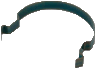

| Material: | ||||
| Clave | Material | Cantidad | Maletín | |
|
I-NT-000P5310-01H | 1 | E | |
|
I-NT-000P5310-01F | 1 | E | |
| I-LN-00367210 | 1 | E | ||
|
I-L3-00HI1100 | 1 | E | |
|
I-NT-000P1311-02A | 1 | F | |
|
I-NT-000P5310-01B | 1 | Almacén 1 | |
|
I-NT-000P5310-01C | 1 | E | |
|
I-NT-000P1311-02A | 1 | F | |
|
I-NT-000P1120-02F | 3 | E | |
|  | I-NT-000P1311-02E | 1 | F | |
| -- | -- | 1 | -- |